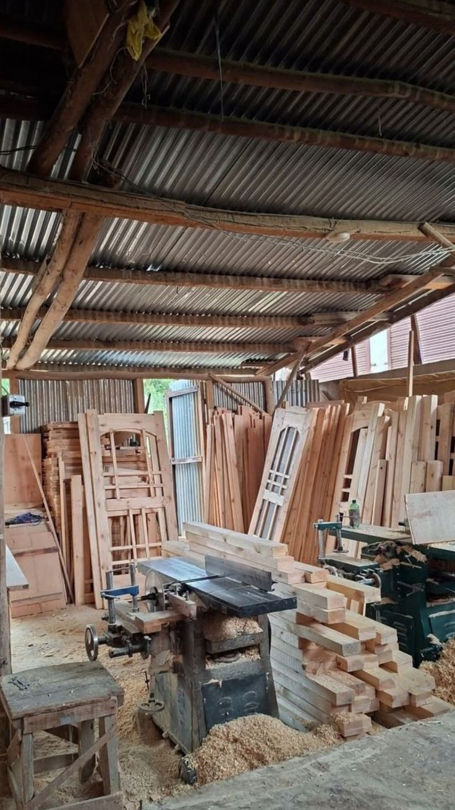
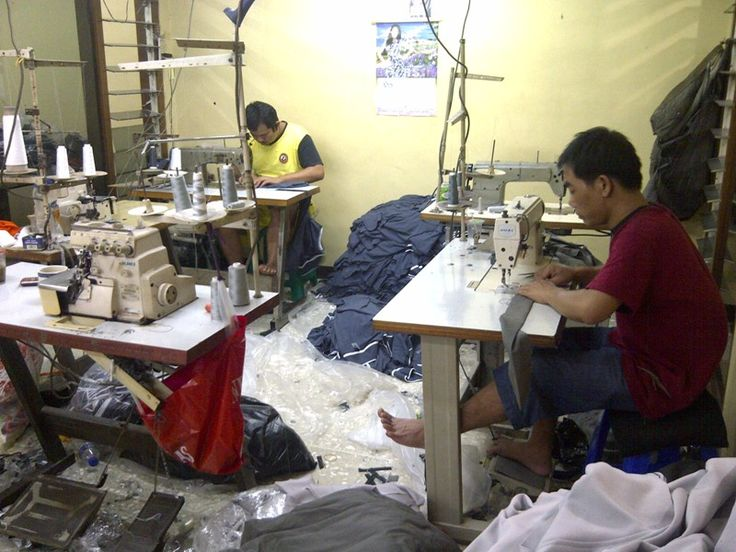

KERAJINAN
Produk Mebel
Mulai Rp 150.000
Produk suvenir dan perabotan rumah tangga ramah lingkungan hasil kerajinan tangan Warga Desa Gombang. Kokoh dan bernilai seni tinggi.
Pesan via WhatsApp
Konveksi
Pengolahan Kain
Rp 25.000 / PRODUK
Produk kain berkualitas tinggi hasil pengolahan lokal. Cocok untuk keperluan sehari-hari dan hadiah.Juga bisa digunakan sebagai taplak meja.
Pesan via WhatsApp